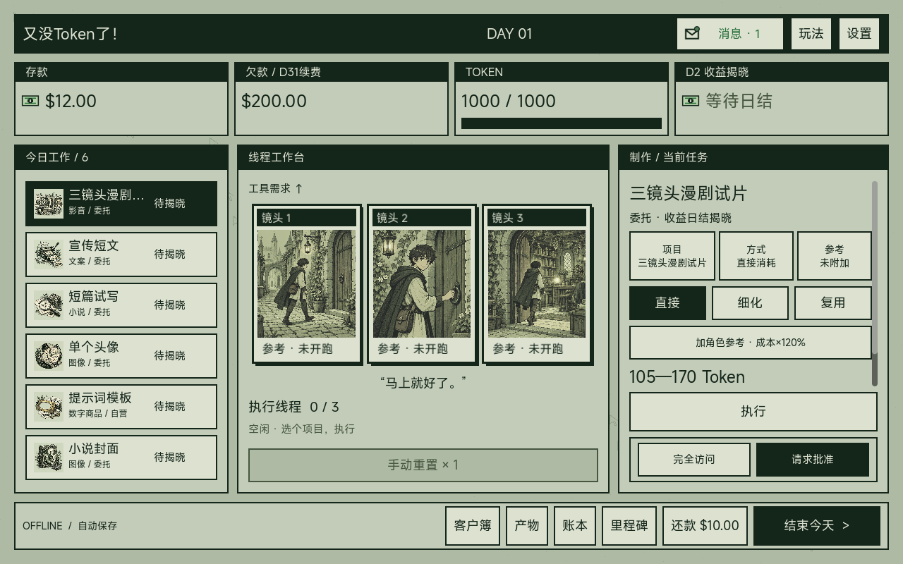
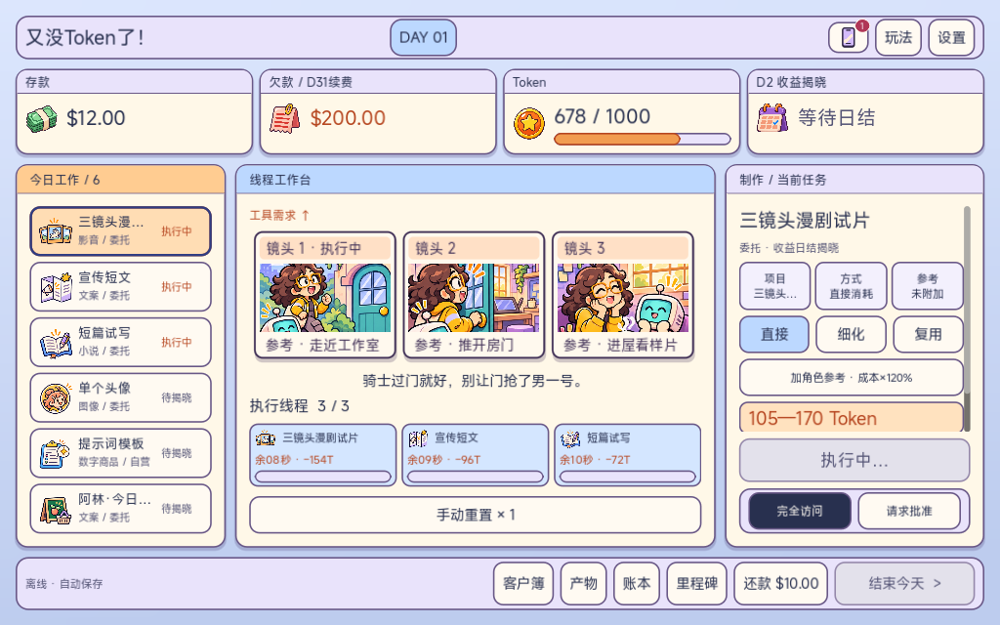
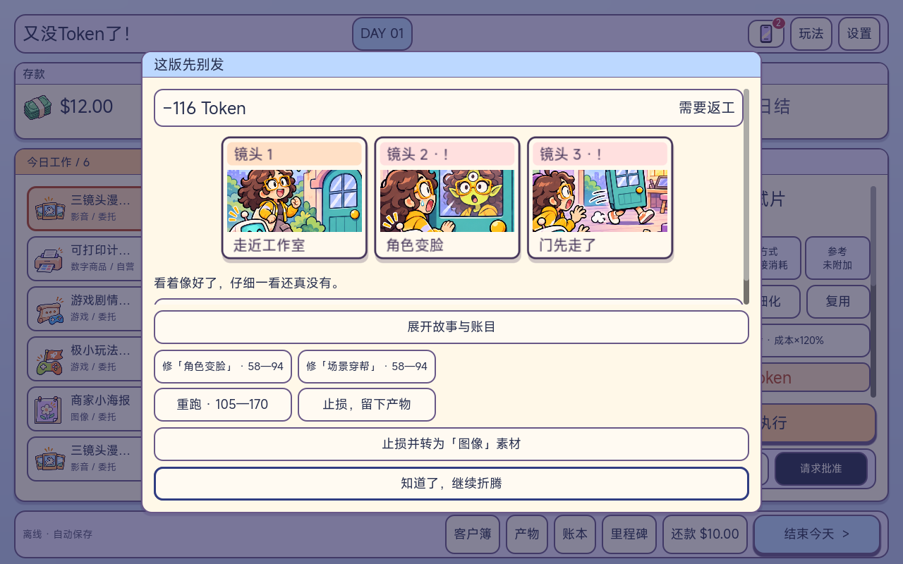
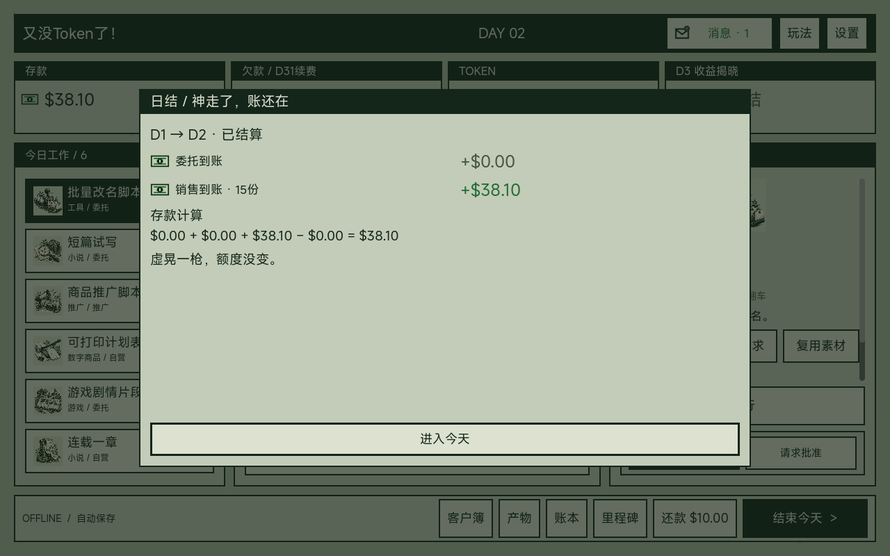
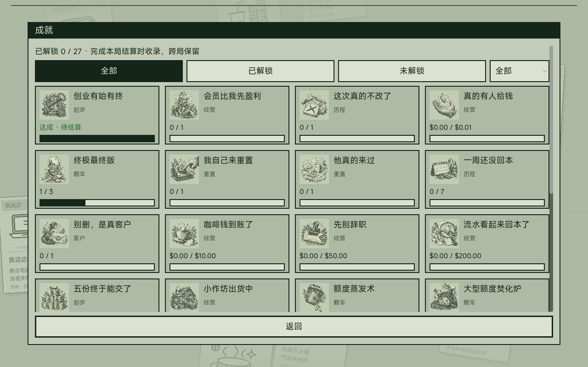
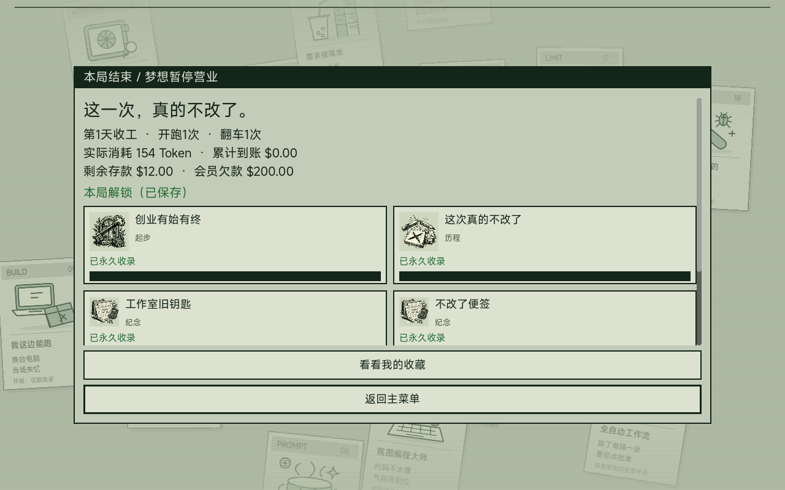

先看消耗，把额度给值得做的单
漫剧、工具、文案等工作都用卡片呈现。委托给出消耗区间和交付风险，运行时最多并行三单，开工就先扣 Token。

个人作品 / 模拟经营
玩家开局已订阅 AI 会员，欠下第一笔会员费。要撑到下一次续费，就得在有限额度里接活、返工或及时止损。
Godot / GDScript · Windows 可玩原型 0.11.8 · 画面取自同版本导出包的测试场景

我确定了现金与 Token 两套资源、不可回退的日结，以及「只在日结揭晓收入」的规则。我用 Codex 协助把规则、工作台和结算做进 Godot 原型，再根据运行画面迭代预览、线程队列与委托排版。
漫剧、工具、文案等工作都用卡片呈现。委托给出消耗区间和交付风险，运行时最多并行三单，开工就先扣 Token。
放大中间的作品预览，把倒计时和已扣额度压到下方。几项工作并行时，玩家仍能追踪状态并为下一单留出额度。

失败时显示实际支出和产物问题。玩家可以修局部、整份重跑，或保留能拆成素材的片段。

委托验收和自营销售在日结入账，当天结束后只向前推进。日终的「重置之神」有机会补满后续可用额度，手动重置道具则交给玩家择机使用。

续费留出明确的经营压力。本局经历会在结算后写进成就与收藏，让一次没赚回会员费的尝试也能留下可见的进展。

